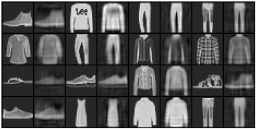
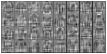
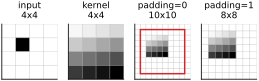
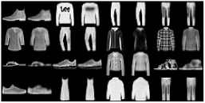
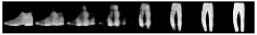
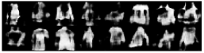

Every network so far has needed answers. Each training image came with a label, and the loss measured how far the network’s guess was from it. Labels are expensive: someone has to sit down and write “ankle boot” sixty thousand times. Yet a child learns most of what it knows about the visual world without anyone labeling anything. Can a network learn something useful from images alone?
One beautifully simple answer is the autoencoder. Ask a network to reproduce its input, but force the information through a narrow bottleneck on the way. To pass a image through 32 numbers and rebuild it on the other side, the network has to discover what matters about the images: which details can be dropped and which patterns recur. The “label” is the image itself. This is our first step from networks that recognize toward networks that generate.
A linear autoencoder
We use Fashion-MNIST again, kept as images of shape (1, 28, 28) with values between 0 and 1, and hold back the last 10,000 training images for validation. We load the labels too, but the autoencoder will never look at them; they come out only at the end of the chapter, to test what it learned. get_batch draws a random batch of images (without labels, so it takes one argument fewer than the version of Chapter 11), and the montage_plot helper from Chapter 8 draws grids of them.
import torch
import torch.nn.functional as F
from torchvision.datasets import FashionMNIST
torch.manual_seed(0)
device = ('cuda' if torch.cuda.is_available()
else 'mps' if torch.backends.mps.is_available() else 'cpu')
def load(train):
ds = FashionMNIST('data', train=train, download=True)
X = ds.data[:, None].float() / 255.0 # add a channel axis
return X.to(device), ds.targets.to(device)
X, Y = load(train=True) # (60000, 1, 28, 28), values 0-1
X_test, Y_test = load(train=False)
X, X_val = X[:50000], X[50000:] # 10,000 held out for validation
Y, Y_val = Y[:50000], Y[50000:]
def get_batch(X, batch_size):
return X[torch.randint(len(X), (batch_size,), device=X.device)]
print(tuple(X.shape), len(X_val), len(X_test))(50000, 1, 28, 28) 10000 10000
The simplest autoencoder is a single weight matrix used twice. The encoder multiplies the 784 pixels by a matrix to get a 32-number code; the decoder multiplies the code by the same matrix transposed to get 784 numbers back. The loss is the mean squared difference between the input and its reconstruction, and every thousand steps we print it for the current batch and for the validation images.
def encode(x, W):
return x.reshape(len(x), 784) @ W # 784 numbers -> 32
def decode(code, W):
return (code @ W.T).reshape(-1, 1, 28, 28) # 32 numbers -> 784
def error(x, y): # mean squared error
return ((x - y) ** 2).mean()
W = (0.01 * torch.randn(784, 32, device=device)).requires_grad_()
optimizer = torch.optim.Adam([W], lr=0.001)
for step in range(5001):
x = get_batch(X, 128)
loss = error(decode(encode(x, W), W), x)
optimizer.zero_grad()
loss.backward()
optimizer.step()
if step % 1000 == 0:
with torch.no_grad():
val = error(decode(encode(X_val, W), W), X_val)
print(step, round(loss.item(), 4), round(val.item(), 4))0 0.2047 0.1993 1000 0.016 0.0159 2000 0.0148 0.0155 3000 0.0156 0.0155 4000 0.0146 0.0154 5000 0.0153 0.0154
Each image is compressed times. How much survives? The average squared error over all 10,000 test images is one number; the first sixteen test images, each followed by its reconstruction, show what it means (Figure 18.1):
def compare(originals, reconstructions):
pairs = torch.stack([originals, reconstructions], dim=1)
montage_plot(pairs.reshape(-1, 28, 28).cpu().numpy(),
grid_shape=(len(originals) // 4, 8), size=4.6)
with torch.no_grad():
x_linear = decode(encode(X_test, W), W)
print(round(error(x_linear, X_test).item(), 4))
compare(X_test[:16], x_linear[:16])0.0154

The overall shapes survive, a boot, a shirt, a pair of trousers, but the details blur away: the printed logo and the plaid pattern are smeared. The 32 columns of the weight matrix show what the encoder measures (Figure 18.2, with zero drawn as middle gray):
weights = W.T.reshape(32, 28, 28).detach().cpu().numpy()
montage_plot(weights, grid_shape=(4, 8), symmetric=True)
These are broad, overlapping patterns, ghostly blends of shirt, trouser and shoe outlines. Each image is rebuilt as a weighted mixture of these 32 patterns, so whatever they cannot express is lost. Mathematically, the best a linear autoencoder can do is capture the same 32-dimensional family of images that the classical statistical technique called principal component analysis finds. (Strictly, the same 32-dimensional subspace, not the same 32 patterns, and without first subtracting the average image, which the classical method does.) The rest of this paragraph is for readers who know some linear algebra; the numbers that matter come after the listing. We can check that claim. The best 32 directions can be computed directly with a singular value decomposition, torch.linalg.svd, one of the workhorses of numerical linear algebra; then we measure how well the autoencoder’s 32 directions line up with them, where 1 means perfectly:
with torch.no_grad():
data = X.reshape(len(X), 784).cpu()
_, _, Vt = torch.linalg.svd(data, full_matrices=False)
V = Vt[:32].T # the best 32 directions (PCA)
Q, _ = torch.linalg.qr(W.cpu()) # the autoencoder's 32 directions
overlap = torch.linalg.svdvals(Q.T @ V) # 1 means the same direction
t = X_test.reshape(len(X_test), 784).cpu()
pca_error = ((t @ V @ V.T - t) ** 2).mean()
print(round(overlap.mean().item(), 3), round(overlap.min().item(), 3))
print(round(pca_error.item(), 4))0.975 0.498 0.0152
On average the two sets of directions agree to 0.975, and the best possible 32-dimensional reconstruction has an error of 0.0152, against the autoencoder’s 0.0154. The weakest agreement, 0.50, shows that training had not quite finished: gradient descent settles the most important directions first, and the error barely depends on the last few. To do better we need the tools of Part IV.
Going up: transposed convolution
A convolutional encoder is easy: it is the front half of the network of Chapter 14, with stride-2 convolutions that halve the image size in place of pooling. The decoder has to go the other way, from a small stack of maps to a large image. The tool for this is the transposed convolution. Where an ordinary convolution gathers a patch of inputs into one output, a transposed convolution spreads each input value out over a patch of outputs, weighted by the kernel. The clearest way to see it is to feed it an input that is all zeros except for a single 1 (Figure 18.3):
x = torch.zeros(1, 1, 4, 4)
x[0, 0, 1, 1] = 1 # a single 1
kernel = torch.arange(1., 17).reshape(1, 1, 4, 4)
full = F.conv_transpose2d(x, kernel, stride=2) # no crop
out = F.conv_transpose2d(x, kernel, stride=2, padding=1) # cropped
print(full.shape, out.shape)
def show_grid(a, title):
n = a.shape[-1]
plt.imshow(a[0, 0], cmap='Greys', vmin=0, vmax=a.max())
plt.xticks(np.arange(-0.5, n), [])
plt.yticks(np.arange(-0.5, n), [])
plt.tick_params(length=0)
plt.grid(color='0.75', linewidth=0.4)
plt.title(f'{title}\n{n}x{n}')
plt.figure(figsize=(4.6, 1.6))
for i, (a, title) in enumerate([(x, 'input'), (kernel, 'kernel'),
(full, 'padding=0'), (out, 'padding=1')]):
plt.subplot(1, 4, i + 1)
show_grid(a, title)
if i == 2: # the part padding=1 keeps
plt.gca().add_patch(plt.Rectangle((0.5, 0.5), 8, 8, fill=False,
ec='tab:red', lw=1.5, zorder=3))
plt.show()torch.Size([1, 1, 10, 10]) torch.Size([1, 1, 8, 8])

padding=1, the outer ring of the output (outside the red frame) is cropped away.The 1 becomes a copy of the kernel, stamped into the output. Each input position stamps its own copy, scaled by its value, and the stride of 2 means that neighboring inputs stamp their copies two pixels apart in the output. Because the kernel is 4 wide, neighboring copies overlap and add up, which blends them smoothly. With no padding, a input gives a output: steps plus the kernel’s width of 4. Here padding means the opposite of what it means for an ordinary convolution: instead of adding a border, padding=1 crops one pixel from every edge of the output, leaving , exactly twice the input. So a stride-2 transposed convolution with a kernel and padding=1 doubles the size of a stack of maps:
small = torch.randn(1, 64, 7, 7)
kernel = torch.randn(64, 32, 4, 4) # (in, out, height, width)
print(F.conv_transpose2d(small, kernel, stride=2, padding=1).shape)torch.Size([1, 32, 14, 14])
The weights of a transposed convolution are stored as (input channels, output channels, height, width), the reverse of an ordinary convolution.
A convolutional autoencoder
Three small helpers create the weights with the He scaling of Chapter 14: random numbers with standard deviation , where is the fan-in, the number of inputs that feed each output: input channels times kernel area for a convolution. A transposed convolution with stride 2 is different. Neighboring copies of the kernel are stamped two pixels apart, so each output pixel receives contributions through only a quarter of the kernel’s positions, and its fan-in is a quarter of that. To keep the code short, this network has no biases.
def conv(n_in, n_out, k=4): # (out, in, k, k)
std = (2 / (n_in * k * k)) ** 0.5
W = torch.randn(n_out, n_in, k, k, device=device) * std
return W.requires_grad_()
def conv_t(n_in, n_out, k=4): # transposed: (in, out, k, k)
fan_in = n_in * k * k // 4 # stride 2: each output gets 1/4
std = (2 / fan_in) ** 0.5
W = torch.randn(n_in, n_out, k, k, device=device) * std
return W.requires_grad_()
def linear(n_in, n_out): # (out, in)
std = (2 / n_in) ** 0.5
W = torch.randn(n_out, n_in, device=device) * std
return W.requires_grad_()
w = [conv(1, 32), # encoder: 1 -> 32 channels, 28 -> 14
conv(32, 64), # 32 -> 64 channels, 14 -> 7
linear(64 * 7 * 7, 32), # 3136 -> 32 numbers
linear(32, 64 * 7 * 7), # decoder: 32 -> 3136 numbers
conv_t(64, 32), # 64 -> 32 channels, 7 -> 14
conv_t(32, 1)] # 32 -> 1 channel, 14 -> 28The network, written as an encoder and a decoder. The final sigmoid, , squashes the output into the range 0 to 1, the range of the pixels.
def encoder(x, w):
x = F.relu(F.conv2d(x, w[0], stride=2, padding=1))
x = F.relu(F.conv2d(x, w[1], stride=2, padding=1))
return F.linear(x.flatten(start_dim=1), w[2])
def decoder(code, w):
x = F.relu(F.linear(code, w[3])).reshape(-1, 64, 7, 7)
x = F.relu(F.conv_transpose2d(x, w[4], stride=2, padding=1))
return torch.sigmoid(F.conv_transpose2d(x, w[5], stride=2, padding=1))
def autoencoder(x, w):
return decoder(encoder(x, w), w)
print(encoder(X[:5], w).shape, autoencoder(X[:5], w).shape)torch.Size([5, 32]) torch.Size([5, 1, 28, 28])
The code is still 32 numbers, so the comparison with the linear autoencoder is fair. Training is the same as before:
optimizer = torch.optim.Adam(w, lr=0.001)
for step in range(5001):
x = get_batch(X, 128)
loss = error(autoencoder(x, w), x)
optimizer.zero_grad()
loss.backward()
optimizer.step()
if step % 1000 == 0:
with torch.no_grad():
val = error(autoencoder(X_val, w), X_val)
print(step, round(loss.item(), 4), round(val.item(), 4))0 0.2061 0.1812 1000 0.0129 0.0136 2000 0.012 0.0114 3000 0.0095 0.0103 4000 0.0102 0.0099 5000 0.0086 0.0096
with torch.no_grad():
x_conv = autoencoder(X_test, w)
print(round(error(x_conv, X_test).item(), 4))
compare(X_test[:16], x_conv[:16])0.0095

Over the whole test set the reconstruction error is 38 percent lower than the linear autoencoder’s, and you can see it in Figure 18.4: the gray haze around each garment is gone, edges are sharper and the sneakers have soles. Fine detail is still lost; the logo and the plaid have vanished altogether. Thirty-two numbers are not enough to record them, and the network spends its budget on the shapes that all clothing shares.
What the codes are good for
The autoencoder never saw a label. Did it learn anything a classifier could use? A quick test is to take a handful of labeled images, turn each into its 32-number code, and train the simplest possible classifier, a single linear layer as in Chapter 11, on the codes. For comparison we train the same classifier on the raw 784 pixels. The function probe does both, with the first n training images as the only labeled data, and reports accuracy on the validation set and then, once, on the test set:
def probe(features, n): # a linear classifier trained on n labels
with torch.no_grad():
f = features(X[:n])
f_val, f_test = features(X_val), features(X_test)
V = torch.zeros(f.shape[1], 10, device=device, requires_grad=True)
b = torch.zeros(10, device=device, requires_grad=True)
optimizer = torch.optim.Adam([V, b], lr=0.01)
for step in range(500):
loss = F.cross_entropy(f @ V + b, Y[:n])
optimizer.zero_grad()
loss.backward()
optimizer.step()
with torch.no_grad():
val = ((f_val @ V + b).argmax(dim=1) == Y_val).float().mean()
test = ((f_test @ V + b).argmax(dim=1) == Y_test).float().mean()
return round(val.item(), 3), round(test.item(), 3)
pixels = lambda x: x.flatten(start_dim=1) # 784 numbers
encoded = lambda x: encoder(x, w) # 32 numbers
for n in [100, 1000]:
print(n, 'labels, pixels:', probe(pixels, n),
' codes:', probe(encoded, n))100 labels, pixels: (0.695, 0.685) codes: (0.716, 0.706) 1000 labels, pixels: (0.797, 0.783) codes: (0.793, 0.784)
With only 100 labels, the 32 numbers learned without labels do about as well as the 784 pixels they came from: 71 percent against 69 on the test set, a difference within the noise of a single draw of 100 labels. With 1,000 labels the two are level. The codes are 25 times smaller and, at these numbers of labels, gave up nothing a linear classifier could use. (With tens of thousands of labels we would expect the pixels to pull ahead; the exercises let you check.) This is the idea behind self-supervised learning: learn from plentiful unlabeled data first, then use a few labels to put the result to work. In Chapter 16 we borrowed features learned from a million labeled photographs; modern systems learn their features mostly from data nobody labeled at all.
The space of codes
Every image now corresponds to a point in a 32-dimensional latent space, and the decoder can turn any point in that space into an image, not just the points that came from real images. What lies between two real images? Here we encode an ankle boot and a pair of trousers, then decode points along the straight line between their codes:
with torch.no_grad():
a, b = encoder(X_test[[0, 2]], w) # an ankle boot and a trouser
steps = torch.linspace(0, 1, 8, device=device)[:, None]
blend = decoder((1 - steps) * a + steps * b, w)
montage_plot(blend[:, 0].cpu().numpy(), grid_shape=(1, 8), size=4.6)
The boot does not simply fade out while the trousers fade in, as it would if we blended the pixels. The shape itself deforms through a series of strange in-between garments. The network has built its own space of clothing, and we can walk around in it.
So can we make new clothing by picking random codes? Each of the 32 numbers in a code has its own typical value and spread, so we measure the average and standard deviation of each one over the validation images, and draw random codes to match:
with torch.no_grad():
codes = encoder(X_val, w) # (10000, 32)
mean, std = codes.mean(dim=0), codes.std(dim=0) # one per dimension
print(std[:8].cpu())
random_codes = mean + std * torch.randn(16, 32, device=device)
fakes = decoder(random_codes, w)
montage_plot(fakes[:, 0].cpu().numpy(), grid_shape=(2, 8), size=4.6)tensor([1.62, 1.78, 1.15, 1.61, 1.27, 1.29, 1.61, 1.65])

The spreads printed for the first eight numbers range from about 1.2 to 1.8, which is why each number gets its own. Most of the results in Figure 18.6 are recognizably tops, T-shirts and pullovers, and a few could be bags, but all of them are blurry and blotchy, and some are hard to name at all: a shirt melting into a bag, a garment no shop would sell. Not one is a shoe or a pair of trousers. The autoencoder was only ever asked to reconstruct real images. Nothing in its training asked that its latent space be easy to sample from, and it isn’t. The codes of real images fill an irregular region of the 32-dimensional space, with gaps and bulges. Our random codes land roughly in the right neighborhood but often between the places real codes go, where the decoder has never been trained and can only guess.
Variational autoencoders
The principled fix is the variational autoencoder, or VAE, proposed in 2013. A VAE adds a second term to the loss that pushes the codes of the training images toward a simple, known distribution: each of the 32 numbers independently bell-shaped around zero with a spread of 1, the same distribution torch.randn draws from. The encoder also learns to make each image’s code slightly fuzzy, so the decoder learns to turn a whole small cloud of codes, not one exact point, into a good image. The two pressures together leave few gaps. After training, a code drawn with torch.randn lands where the decoder has been trained, and comes out as a plausible image. The price is that reconstructions get a little blurrier still, because the codes are no longer free to sit wherever reconstruction alone would put them.
VAEs are more than a historical step. Image generators such as Stable Diffusion do not work on pixels directly. They first train a VAE to squeeze images into a much smaller latent space, do all of their generating inside that space, and use the VAE’s decoder to turn the result into pixels. These are called latent diffusion models.
To get a network that turns random numbers directly into convincing images, we can also train for exactly that and nothing else. The trick for doing so is one of the cleverest ideas in deep learning: set two networks against each other.